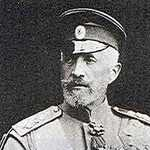

Nikolay Nikolayeviç (1856-1929)

Birinci Dünya Savaþý sýrasýnda Rus ordularýna baþkumandanlýk yapmýþ olan asker ve generaldir. Muhtelif görevlerde bulunduktan sonra 1914 yýlýnda Rus ordularý baþkumandanlýðýna getirilmiþtir. Savaþ boyunca bazý cephelerde baþarýlý olurken, bazý bölgelerde de Ruslarýn yenilmesine mani olamamýþtýr. Ordunun savaþ yorgunu olduðu ve Bolþevik ihtilalinin öncesine rastlayan karýþýk bir dönemde baþkomutanlýk yapmýþtýr. Savaþýn sonlarýna doðru baþkomutanlýktan alýnarak Kafkas cephesine gönderilmiþtir. Esir kampýný teftiþi sýrasýnda, ayaða kalkmadýðý için Bediüzzaman’ý idam cezasýyla yargýlanmak üzere mahkemeye veren Rus komutandýr.Nikolay, 1856 yýlýnda Petersburg’ta doðdu. Rus imparatoru I. Nikolay’ýn torunudur. Saraya mensubiyetinin etkisiyle çok önemli görevlere getirildi. 1895 yýlýnda atandýðý süvari kuvvetleri genel müfettiþliðini on yýl sürdürdü. 1905 yýlýnda Çar’ýn yaveri oldu. Bununla birlikte milli savunma konseyinin de baþýna getirildi ve bu iki görevi birlikte sürdürdü. 1908 yýlýna kadar bu görevleri devam ettirdi.
Nikolay, I. Dünya Savaþý’nýn baþladýðý 1914 yýlýnda Rus ordularý baþkumandanlýðýna atandý. Muhtelif cephelerde savaþan Rus ordularýný yönetti. Rus tarihinin önemli dönüm noktalarýndan biri olan bu tarihlerde, bir taraftan muhtelif cephelerde savaþ devam ederken, diðer taraftan da Bolþevik ihtilali uygun zeminini bulup, savaþ yýllarýnda sahneye kondu.
Rus ordularý, Fransa ile daha evvelden yapýlan bir anlaþma ve taahhüt gereði, seferberliðin tamamlanmasýný beklemeden taarruza geçti. Doðu Prusya üzerinden saldýrýya geçen Ruslar önemli bir direniþle karþýlaþtý ve iki taraftan da aðýr zayiatlar meydana geldi. Ýki ordusu yenilen Ruslar, Galiçya’da Alman-Avusturya ordularýyla savaþa tutuþtular. Burada 150 kilometrekarelik geniþ bir alanda taarruza geçtiler. Zor duruma düþen Avusturya’nýn yardýmýna Almanlar yetiþti. Öte yandan Alman ve Avusturya ile birlikte savaþan Osmanlý devleti de Galiçya’ya 33.000 kiþilik bir kuvvet sevk etti. Ýttifak Devletleri Rus saldýrýlarýný püskürttükten sonra karþý saldýrýya geçip Ruslara aðýr kayýplar verdirdiyseler de tamamen onlarý yok edemediler. Nikolay, çok büyük kayýplar pahasýna da olsa Alman-Avusturya ilerlemesini durdurmayý baþardý. Böylece, Ruslarýn karþý karþýya kaldýðý büyük bir tehlikenin önüne geçmiþ oldu. Ancak, bu son baþarýsý baþkomutanlýktan alýnmasýna engel olmadý. Görevinden alýnarak, Kafkas cephesine gönderildi.
Nikolay’ýn komutanlýðýný yaptýðý Rus ordularýnýn savaþtýðý önemli cephelerden bir tanesi de Kafkas cephesidir. Osmanlý Devleti ile savaþýlan bu cephede bir çok beldenin Rus ve Ermeni iþgaline uðramasýna sebep oldu. Ruslarýn, Osmanlý topraklarýnda ilerlemesini ve Doðu Anadolu’nun iþgal edilmesini arzulayan Ermeniler, birçok giriþimde bulundular. Ermeniler, Rus Çarý II. Aleksandýr’a hitaben hazýrladýklarý bildirilerini, Tiflis’te bulunan genel komutan Nikolay’a sundular. Çarýn kendileri için beslediði sevgi duygularýný bildiklerini ve milli durumlarýnýn düzeltilmesi için din ve kan kardeþleri olan Ruslarýn desteðini beklediklerini belirttiler.
Nikolay’a yazdýðý mektubunda, Ermenilerle ilgili uyarýlarda bulunan Rus Dýþiþleri Bakaný Sazanov, Ermenilere baðýmsýzlýk verilmesinin çözüm olmayacaðý uyarýsýnda bulundu. 27 Haziran 1916 tarihli yazýsýnda bakan, Ermenilerin Erzurum’a yerleþme haklarýnýn olmadýðýný, Ermenilerin hiçbir zaman bulunduklarý bölgelerde çoðunluðu teþkil etmediðini belirterek, istekleri konusunda dikkatli davranmasýný Nikolay’dan istedi. Doðu Anadolu’da baðýmsýzlýk isteyen Ermenilerin bu isteklerinin kabul edilmesi halinde, çoðunluðun, azýnlýðýn idaresi altýna gireceðini belirtti.
Diðer taraftan, Osmanlý-Alman planýna göre, Kafkasya üzerinden Ruslara büyük bir darbe vurulacak ve Orta Asya’daki Türklerin ayaklanmasý saðlanacaktý. Bu amaçla Enver Paþa komutasýndaki Osmanlý ordusu Aralýk 1914’te taarruza geçti. Ancak; yüksek daðlar, soðuk, yolsuzluk, açlýk ve salgýn hastalýk sebebiyle çok aðýr kayýplar verildi. 1916 yýlý Nisan’ýnda saldýrýya geçen Ruslar, Ermenilerin de desteðiyle Erzurum ve Trabzon’u iþgal ettiler. Türk ordusunun karþý taarruzu ise bir netice veremedi. Erzincan ve Muþ illeri de iþgale uðradý.
Birinci Dünya Savaþý sýrasýnda, Rus-Ermeni kuvvetlerine karþý talebeleriyle birlikte meydana getirdikleri milis birliðini oluþturan Bediüzzaman, Pasinler, Van-Gevaþ, Ýsparit ve Bitlis civarlarýnda savaþtý. 1914 yýlýndan itibaren baþlayan mücadele, talebelerinin büyük bir bölümünün þehit düþmesi ve kendisinin de Þubat 1916 tarihinde yaralý olarak Ruslarýn eline esir düþmesine kadar devam etti.
Bediüzzaman, Kostroma (Kosturma)’daki esir kampýna götürüldü. Bediüzzaman ile Nikolay bu kampta karþýlaþtý. Biri savaþ esiri, diðeri ise Rus ordularýný idare eden kumandandý. Nikolay, esir kampýný ziyareti sýrasýnda herkesin ayaða kalkmasýna karþýlýk Bediüzzaman’ýn kalkmadýðýný gördü. Görmemiþ olduðunu düþünerek bir daha önünden geçti. Yine ayaða kalkmadýðýný görünce tercümaný vasýtasýyla ayaða kalkmama sebebini sordu. Bir ara tanýnmamýþ olabileceðine hükmetti. Bediüzzaman’ýn kendisini tanýdýðýný ve Rus kumandaný Nikolay Nikolayeviç olduðunu bildiði halde kalkmadýðýný öðrenince sinirlendi.
Nikolay, yapýlan davranýþýn Rus ordusu ve dolayýsýyla Çar’ýna hakaret olduðunu belirtti. Bediüzzaman ise, hakaret etmediðini, bir Müslüman alimi olduðunu, imanlý bir kimsenin Cenab-ý Hakk’ý tanýmayan adamdan üstün olduðunu ve bundan dolayý da ayaða kalkmadýðýný sözlerine ekledi. Davranýþýnýn þahýslarla alakalý deðil de dininin izzetinden kaynaklandýðýný hareket ve davranýþýyla gösterdi.
Ýdam istemiyle Bediüzzaman’ý mahkemeye veren Nikolay, bu yönde mahkemeden karar çýkmasýný saðladý. Kararýn infaz edilmesinden önce namaz kýlmak için izin isteyen Bediüzzaman, dini vazifesini son kez yapmak üzereydi. Durumu baþýndan itibaren yakýndan takip eden Nikolay, Bediüzzaman’ýn bu samimiyeti ve ihlasý karþýsýnda geri adým atarak cezanýn infazýndan vazgeçti. Özür dileyip affýný rica etti.
Çok zor bir dönemde Rus ordusuna baþkumandanlýk eden Nikolay, Bolþevik ihtilalinden sonra bir süre Kýrým’da kaldý. Daha sonra ülkesinden ayrýlarak Fransa’ya gitti (1919). Yaklaþýk on yýl Fransa’da yaþadýktan sonra 1929 yýlýnda Antibes’te öldü.